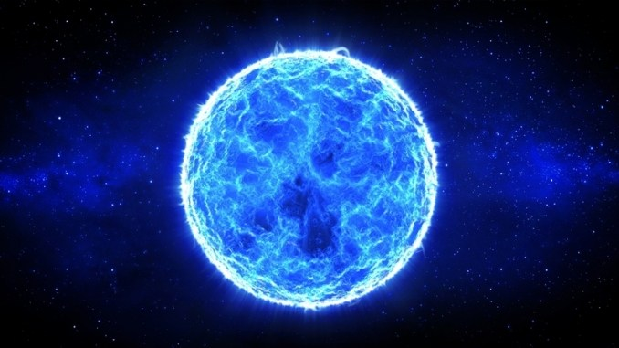

Deneb (dĕn´ĕb), brightest star in the constellation Cygnus; Bayer designation Alpha Cygni; 1992 position R.A. 20h41.2m, Dec. +45°15′.
It is a white supergiant of spectral class A2 Ia; its intrinsic brightness (about 60,000 times as luminous as the sun) is the greatest of
all the bright stars. Thus, even though it is also one of the most distant bright stars, being about 1,600 light-years from the earth, it
has an apparent magnitude of 1.25, making it one of the 20 brightest. Its name is from the Arabic meaning "hen's tail," referring to its
position in the constellation.

Vega is easily recognizable for its brilliance and blue-white color. You can also easily pick out its constellation Lyra, which is
small and compact, and consists primarily of Vega and four fainter stars in the form of a parallelogram.
The little constellation Lyra has some interesting features. Near Vega is Epsilon Lyrae, the famed “double-double” star. Between the Gamma and Beta
stars is the famous Ring Nebula, visible in small telescopes.

Rigel, also called Beta Orionis, one of the brightest stars in the sky, intrinsically as well as in appearance. A blue-white supergiant
in the constellation Orion, Rigel is about 870 light-years from the Sun and is about 47,000 times as luminous. A companion double star, also
bluish white, is of the sixth magnitude. The name Rigel derives from an Arabic term meaning “the left leg of the giant,” referring to the figure
of Orion.
Rigel one character different from the English name Nigel has been used as character names. In the eighties there was a comic strip in a computer
magazine called "Nigel from Rigel" but more famously, the Farscape character Dominar Rygel XVI is also inspired by the name. aliens from this part of
the milky way are inevitably known as Rigellians.